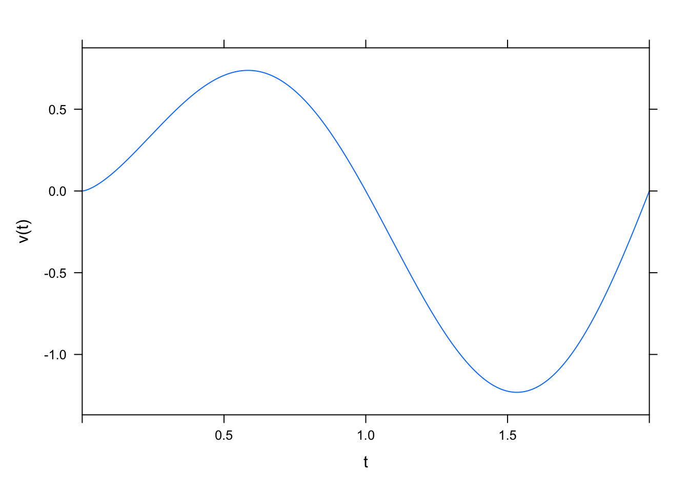
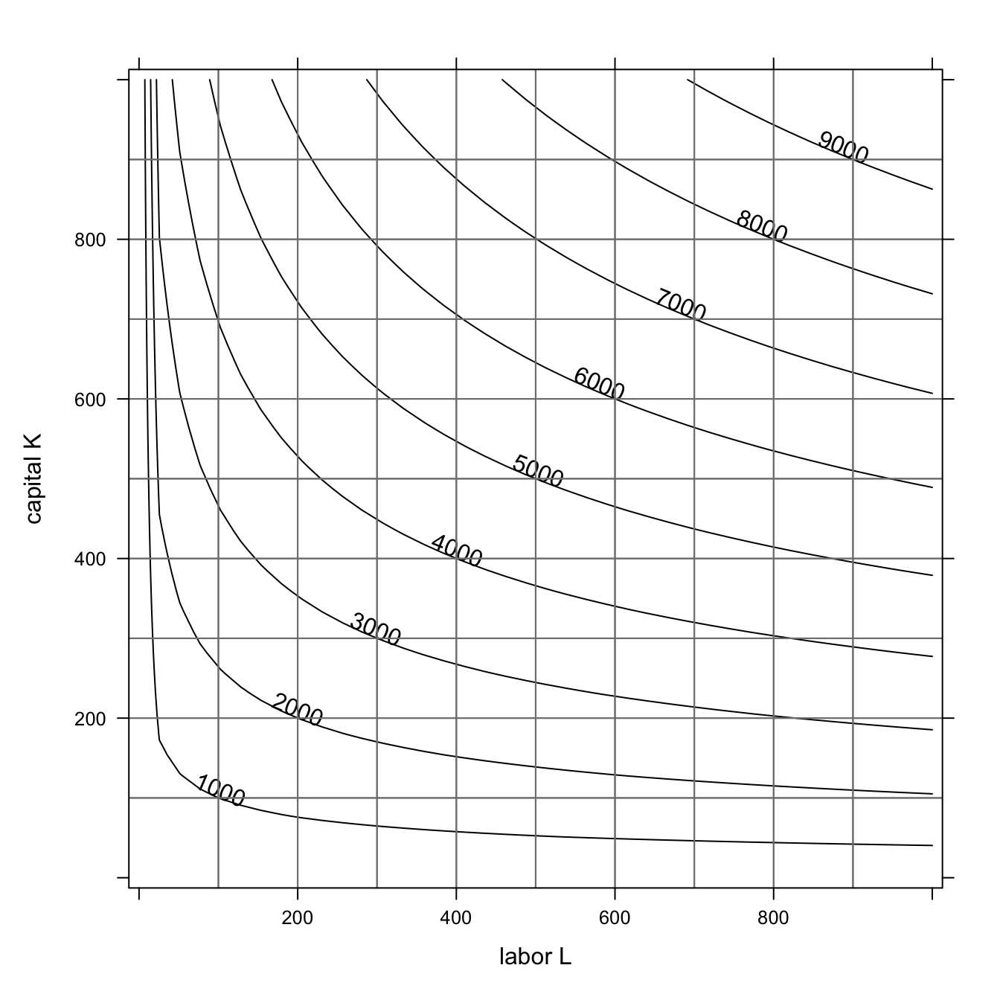

25 2D Optimization
25.1 Summary
The critical points of \(f(x,y)\) are the points \((a,b)\) where both \(f_x(a,b)=0\) and \(f_y(a,b)=0\).
There are three ways to determine whether a critical point \((a,b)\) is a minimum, a maximum, or a saddle point.
The second derivative test relies on the value \[ D = f_{xx} f_{yy} - (f_{xy})^2. \]
- If \(D > 0\) and \(f_{xx} > 0\) then \((a,b)\) is a local minimum.
- If \(D > 0\) and \(f_{xx} < 0\) then \((a,b)\) is a local maximum
- If \(D < 0\) then \((a,b)\) is a saddle point
- If \(D=0\) then the test fails
Create a contour plot for \(f(x,y)\) on a very small neighborhood of \((a,b)\). Use the contours to figure out whether it is a local max, a local min, or a saddle point.
Find the values of \(f(a,b) - f(x,y)\) for points \((x,y)\) in a small circle around \((a,b)\).
- If these values are ALL positive then \((a,b)\) is a local maximum
- If these values are ALL negative then \((a,b)\) is a local minimum
- If some values are positive and some values are negative, then \((a,b)\) is a saddle point.
Here is some R code that you can use to check values of \(f(x,y)\) in a small circle around a point \((a,b)\).
r = 0.1
theta = seq(0,2*pi,pi/10)
f(a,b) - f(a+r*cos(theta), b+r*sin(theta)) 25.2 Activities
25.2.1 Characterize the Extrema
Multiple 2D functions have been (contour) plotted below. For each, identify the critical points and determine if they are maximums, minimums, or saddle points.
f = makeFun(x^2+y^2+3~x&y)
plotFun(f(x,y)~x&y, xlim=range(-2,2), ylim=range(-2,2), filled=FALSE)
f = makeFun(-x*y*exp(-x^2-y^2)~x&y)
plotFun(f(x,y)~x&y, xlim=range(-1.5,1.5), ylim=range(-1.5,1.5), filled=FALSE)
f = makeFun(y^2-x^2~x&y)
plotFun(f(x,y)~x&y, xlim=range(-2,2), ylim=range(-2,2), filled=FALSE)
f = makeFun(cos(x)*(x^2-y^2)~x&y)
plotFun(f(x,y)~x&y, xlim=range(-1.5,1.5), ylim=range(-1.5,1.5), filled=FALSE)
25.2.2 Classifying a critical point using a small circle of values
The function \(f(x,y) =3x^2y + y^3 -3x^2-3y^2+3\) has four critical points: \[ (0,0) \qquad (0,2) \qquad (1,1) \qquad (1,,-1). \] For each critical point \((a,b)\), evaluate \(f(a,b) - f(x,y)\) in a small circle centered at \((a,b)\) to determine whether it is a local minimum, a local maximum, or a saddle point
25.2.3 The 2D Second Derivative Test
The function \(f(x,y)=10 + x^3 + 8y^3 - 3xy\) has two critical points: \((0,0)\) and \((1/2,1/4)\).
- Use the second derivative test to classify each point as a local minimum, local maximum, or saddle point. For convenience, here are the second derivatives of \(f(x,y)\).
\[ f_{xx} = 6x, \qquad f_{yy} = 48y, \qquad f_{xy} = -3. \]
- Confirm that your answer is correct by creating a contour plot on a very small neighborhood around each critical point.